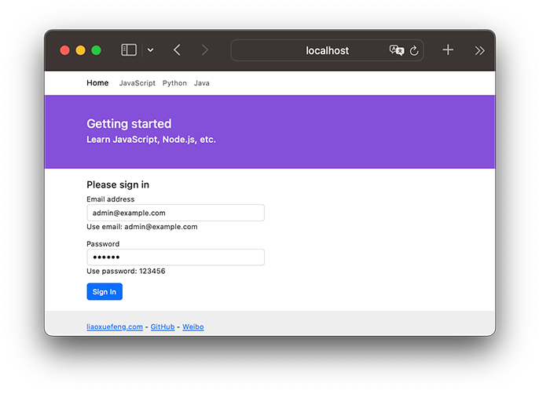
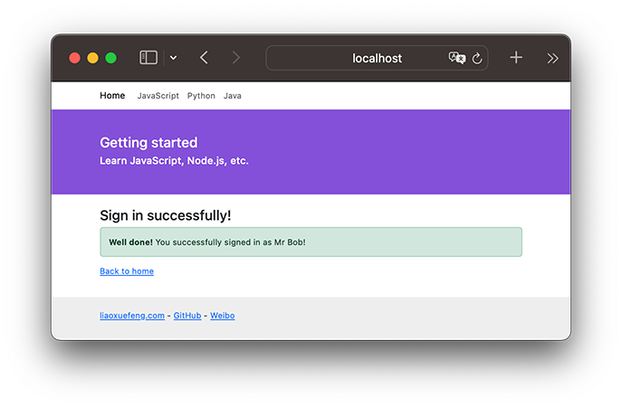
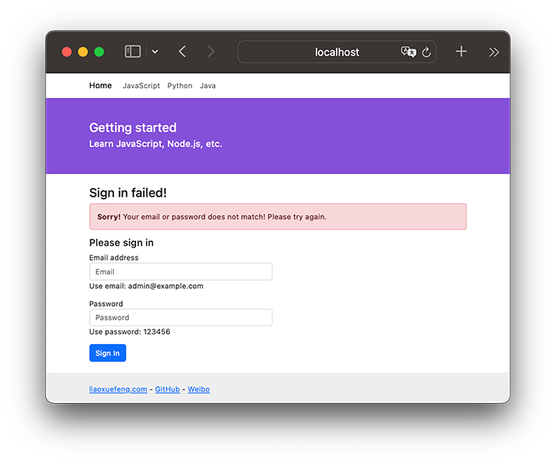

使用MVC
../git/BEFORE.md
我们已经可以用koa处理不同的URL，还可以用Nunjucks渲染模板。现在，是时候把这两者结合起来了！
当用户通过浏览器请求一个URL时，koa将调用某个异步函数处理该URL。在这个异步函数内部，我们用一行代码：
ctx.render('home.html', { name: 'Michael' });
通过Nunjucks把数据用指定的模板渲染成HTML，然后输出给浏览器，用户就可以看到渲染后的页面了：
┌─────────────────────────────┐
HTTP Request │GET /Bob │
└─────────────────────────────┘
│
│ name = Bob
▼
┌─────────────────────────────┐
app.mjs │GET /:name │
│async (ctx, next) { │
│ ctx.render('home.html', {│
│ name: ctx.params.name│
│ }); │
│} │
└─────────────────────────────┘
│
│ {{ name }} ─▶ Bob
▼
┌─────────────────────────────┐
Template │<html> │
│<body> │
│ <p>Hello, {{ name }}!</p>│
│</body> │
│</html> │
└─────────────────────────────┘
│
│ Output
▼
┌─────────────────────────────┐
HTML │<html> │
│<body> │
│ <p>Hello, Bob!</p> │
│</body> │
│</html> │
└─────────────────────────────┘
这就是传说中的MVC：Model-View-Controller，中文名“模型-视图-控制器”。
异步函数是C：Controller，Controller负责业务逻辑，比如检查用户名是否存在，取出用户信息等等；
包含变量{{ name }}的模板就是V：View，View负责显示逻辑，通过简单地替换一些变量，View最终输出的就是用户看到的HTML。
MVC中的Model在哪？Model是用来传给View的，这样View在替换变量的时候，就可以从Model中取出相应的数据。
上面的例子中，Model就是一个JavaScript对象：
{ name: 'Bob' }
下面，我们根据原来的url2-koa创建工程view-koa，把koa2、Nunjucks整合起来，然后，把原来直接输出字符串的方式，改为ctx.render(view, model)的方式。
工程koa-mvc结构如下：
koa-mvc/
├── app.mjs
├── controller
│ ├── index.mjs
│ └── signin.mjs
├── controller.mjs
├── package-lock.json
├── package.json
├── static/ <-- 静态资源文件
│ ├── bootstrap.css
│ └── favicon.ico
├── view/ <-- html模板文件
│ ├── base.html
│ ├── index.html
│ ├── signin-failed.html
│ └── signin-ok.html
└── view.mjs
在package.json中，我们将要用到的依赖包有：
"@koa/bodyparser": "^5.1.1",
"@koa/router": "^12.0.1",
"koa": "^2.15.3",
"koa-mount": "^4.0.0",
"koa-static": "^5.0.0",
"nunjucks": "^3.2.4"
先用npm install安装依赖包，然后，我们准备编写以下两个Controller：
处理首页 GET /
我们定义一个async函数处理首页URL/：
async function index(ctx, next) {
ctx.render('index.html', {
title: 'Welcome'
});
}
注意到koa并没有在ctx对象上提供render方法，这里我们假设应该这么使用，这样，我们在编写Controller的时候，最后一步调用ctx.render(view, model)就完成了页面输出。
处理登录请求 POST /signin
我们再定义一个async函数处理登录请求/signin：
async function signin(ctx, next) {
let email = ctx.request.body.email || '';
let password = ctx.request.body.password || '';
if (email === 'admin@example.com' && password === '123456') {
console.log('signin ok!');
ctx.render('signin-ok.html', {
title: 'Sign In OK',
name: 'Mr Bob'
});
} else {
console.log('signin failed!');
ctx.render('signin-failed.html', {
title: 'Sign In Failed'
});
}
}
由于登录请求是一个POST，我们就用ctx.request.body.<name>拿到POST请求的数据，并给一个默认值。
登录成功时我们用signin-ok.html渲染，登录失败时我们用signin-failed.html渲染，所以，我们一共需要以下3个View：
- index.html
- signin-ok.html
- signin-failed.html
编写View
在编写View的时候，我们实际上是在编写HTML页。为了让页面看起来美观大方，使用一个现成的CSS框架是非常有必要的。我们用Bootstrap这个CSS框架。从首页下载zip包后解压，我们把所有静态资源文件放到/static目录下，这样我们在编写HTML的时候，可以直接用Bootstrap的CSS，像这样：
<link rel="stylesheet" href="/static/bootstrap.css">
现在，在使用MVC之前，第一个问题来了，如何处理静态文件？
我们把所有静态资源文件全部放入/static目录，目的就是能统一处理静态文件。在koa中，我们需要编写一个middleware，处理以/static/开头的URL。
如果不想自己编写处理静态文件的middleware，可以直接使用koa-mount和koa-static组合来处理静态文件：
// 处理静态文件:
app.use(mount('/static', serve('static')));
上述代码大致相当于自己手写一个middleware：
app.use(async (ctx, next) => {
// 判断是否以指定的url开头:
if (ctx.request.path.startsWith('/static/')) {
// 获取文件完整路径:
let fp = ctx.request.path;
if (await fs.exists(ctx.request.path)) {
// 根据扩展名设置mime:
ctx.response.type = lookupMime(ctx.request.path);
// 读取文件内容并赋值给response.body:
ctx.response.body = await fs.readFile(fp);
} else {
// 文件不存在:
ctx.response.status = 404;
}
} else {
// 不是指定前缀的URL，继续处理下一个middleware:
await next();
}
});
集成Nunjucks
集成Nunjucks实际上也是编写一个middleware，这个middleware的作用是给ctx对象绑定一个render(view, model)的方法，这样，后面的Controller就可以调用这个方法来渲染模板了。
我们创建一个view.mjs来实现这个middleware：
import nunjucks from 'nunjucks';
function createEnv(path, { autoescape = true, noCache = false, watch = false, throwOnUndefined = false }, filters = {}) {
...
return env;
}
const env = createEnv('view', {
noCache: process.env.NODE_ENV !== 'production'
});
// 导出env对象:
export default env;
使用的时候，我们在app.mjs添加如下代码：
import templateEngine from './view.mjs';
// app.context是每个请求创建的ctx的原型,
// 因此把render()方法绑定在原型对象上:
app.context.render = function (view, model) {
this.response.type = 'text/html; charset=utf-8';
this.response.body = templateEngine.render(view, Object.assign({}, this.state || {}, model || {}));
};
注意到createEnv()函数和前面使用Nunjucks时编写的函数是一模一样的。
这里我们判断当前环境是否是production环境。如果是，就使用缓存，如果不是，就关闭缓存。在开发环境下，关闭缓存后，我们修改View，可以直接刷新浏览器看到效果，否则，每次修改都必须重启Node程序，会极大地降低开发效率。
Node.js在全局变量process中定义了一个环境变量env.NODE_ENV，为什么要使用该环境变量？因为我们在开发的时候，环境变量应该设置为'development'，而部署到服务器时，环境变量应该设置为'production'。在编写代码的时候，要根据当前环境作不同的判断。
注意：生产环境上必须配置环境变量NODE_ENV = 'production'，而开发环境不需要配置，实际上NODE_ENV可能是undefined，所以判断的时候，不要用NODE_ENV === 'development'。
类似的，我们在使用上面编写的处理静态文件的middleware时，也可以根据环境变量判断：
if (!isProduction) {
app.use(mount('/static', serve('static')));
}
这是因为在生产环境下，静态文件是由部署在最前面的反向代理服务器（如Nginx）处理的，Node程序不需要处理静态文件。而在开发环境下，我们希望koa能顺带处理静态文件，否则，就必须手动配置一个反向代理服务器，这样会导致开发环境非常复杂。
编写View
在编写View的时候，非常有必要先编写一个base.html作为骨架，其他模板都继承自base.html，这样，才能大大减少重复工作。
编写HTML不在本教程的讨论范围之内。这里我们参考Bootstrap的官网简单编写了base.html。
运行
一切顺利的话，这个koa-mvc工程应该可以顺利运行。运行前，我们再检查一下app.mjs里的middleware的顺序：
第一个middleware是记录URL以及页面执行时间：
app.use(async (ctx, next) => {
console.log(`Process ${ctx.request.method} ${ctx.request.url}...`);
const start = Date.now();
await next();
const execTime = Date.now() - start;
ctx.response.set('X-Response-Time', `${execTime}ms`);
});
第二个middleware处理静态文件：
if (!isProduction) {
app.use(mount('/static', serve('static')));
}
第三个middleware解析POST请求：
app.use(bodyParser());
最后一个middleware处理URL路由：
app.use(await controller());
现在，用node app.mjs运行代码，不出意外的话，在浏览器输入localhost:3000/，可以看到首页内容：

直接在首页登录，如果输入正确的Email和Password，进入登录成功的页面：

如果输入的Email和Password不正确，进入登录失败的页面：

怎么判断正确的Email和Password？目前我们在signin.js中是这么判断的：
if (email === 'admin@example.com' && password === '123456') {
...
}
当然，真实的网站会根据用户输入的Email和Password去数据库查询并判断登录是否成功，不过这需要涉及到Node.js环境如何操作数据库，我们后面再讨论。
如果要以production模式启动app，需要设置环境变量，可以通过以下命令启动：
$ NODE_ENV=production node app.mjs
这样模板缓存将生效，同时不再响应静态文件请求。
扩展
注意到ctx.render内部渲染模板时，Model对象并不是传入的model变量，而是：
Object.assign({}, ctx.state || {}, model || {})
这个小技巧是为了扩展。
首先，model || {}确保了即使传入undefined，model也会变为默认值{}。Object.assign()会把除第一个参数外的其他参数的所有属性复制到第一个参数中。第二个参数是ctx.state || {}，这个目的是为了能把一些公共的变量放入ctx.state并传给View。
例如，某个middleware负责检查用户权限，它可以把当前用户放入ctx.state中：
app.use(async (ctx, next) => {
var user = tryGetUserFromCookie(ctx.request);
if (user) {
ctx.state.user = user;
await next();
} else {
ctx.response.status = 403;
}
});
这样就没有必要在每个Controller的async函数中都把user变量放入model中。